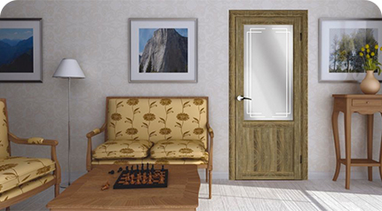
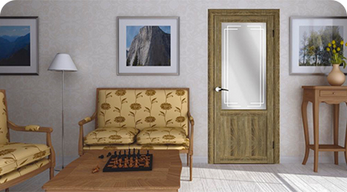

г. Севастополь, рынок Соловьи,
ул. Соловьева 12, ост. Авангард
(со стороны Токарева)
График работы:
пн - пт: с 9:00 - 17:30
сб - вс: с 9:00 - 17:00
В какую сторону должна открываться входная дверь?
В какую сторону должна открываться входная дверь?
Как только мы задумываемся об установке входной двери в квартиру, то автоматически возникает вполне логичный вопрос "А какой тип открывания выбрать?”. Рассматривать будем сразу два аспекта: делать правостороннее или левостороннее открывание.
Давайте разбираться на какие нормативные документы стоит обратить внимание. Поможем разобраться какой тип открывания подойдет именно вам.
Согласно приказу МЧС № 313 раньше запрещалось устанавлиать входную дверь, открывающуюся внутрь квартиры. Открывание должно было производится исключительно наружу. К сожалению или к счастью этот приказ на сегодняшний день не действителен. В 2012 году принято постановление правительства РФ от 25.04.2012 № 390 «О ПРОТИВОПОЖАРНОМ РЕЖИМЕ», которое не регламентирует тип открывания и закрывания квартирной двери.
Следовательно мы делаем вывод, что можем самостоятельно принимать решение.
Специалисты по безопасности все же дают следующие рекомендации: желательно, чтобы ее открывание происходило наружу.
Тогда, если происходит экстренная ситуация и когда квартиру покидает несколько человек, они не создадут толкучку возле двери.
Чтобы покинуть квартиру, вам не нужно будет делать шаг назад, тянуть ручку, потом снова сделать шаг вперед.
Когда открывание происходит в сторону подъезда, не будет необходимости на постоянной основе обеспечивать свободное пространство для движения дверного полотна внутри квартиры. Данный подход весьма рационален, потому как место в прихожей вам пригодится для других целей.
Открывание двери внутрь
- Злоумышленники, чтобы проникнуть к вам в дом, могут выбить дверь с открыванием вовнутрь.
- Открывание вовнутрь может быть для вас полезно если:
- Угловое расположение входа в вашу квартиру, физически не позволяет обеспечить открывание двери наружу.
- Электрический щиток находится рядом с входом в квартиру и дверь в открытом состоянии упирается в него.
- Перед квартирой у вас оборудован тамбур, в котором хранится комплект зимней резины, лыжи, санки, коляски, сундуки, содержимое которых вы затрудняетесь даже припомнить. Может случится так, что вы неаккуратно поставили велосипед в тамбуре и он упал, после чего оказался зажатым между дверью в квартиру и стеной тамбура. Благодаря такому неудачному стечению обстоятельств вы можете оказаться в ловушке своей собственной квартире.
Подводя итог можно сказать, что если у вас есть тамбур, в котором хранится много вещей, то смело ставьте дверь с открыванием внутрь квартиры, а вот открывание двери тамбура лучше сделать наружное.
Вправо или влево
Нормативные акты, как было выяснено ранее, на сегодняшний день не регламентируют в какую сторону должна открываться дверь. Для того, чтобы определиться вправо или влево будет открываться ваша входная дверь, следует принять во внимание расположения квартир на лестничной клетке, а также то, в какую сторону открываются двери соседских квартир.
Представим себе ситуацию, когда на углу располагаются две квартиры. Двери одной имеют левостороннее открывание, а другой - правостороннее. Тогда при одновременном открывании дверей они будут ударяться друг об друга. В этом случае вам будет полезна статья под названием "Как убрать царапину на металлической двери", хотя при подобном стечении обстоятельств, царапиной вы вряд ли отделаетесь.
Нужно ли согласовывать изменение направления открывания двери?
Ответ: нет, не нужно. Потому что согласованию подлежат изменения которые являются перепланировкой или приравниваются к таковой. Например, изменение габаритов дверного проема или смена его расположения - перепланировка, поскольку в результате таких действий меняется конструкция постройки. Согласование таких изменений необходимо начиная от БТИ, заканчивая пожарным надзором.
Решение проблемы - выбирать направление открывания двери которое позволит не блокировать и не задевать двери соседей. Это будет особенно актуально в экстренной ситуации, когда потребуется срочная эвакуация жильцов всего дома.
Решение проблемы - выбирать направление открывания двери которое позволит не блокировать и не задевать двери соседей. Это будет особенно актуально в экстренной ситуации, когда потребуется срочная эвакуация жильцов всего дома.
А теперь вы смотрите на свою дверь и не понимаете, открывается она вправо или влево. То есть, когда вы находитесь в подъезде, дверь открывается вправо, а когда находитесь в квартире - влево. Так как определить какой тип открывания у вашей двери?
Вам следует выйти из квартиры и встать лицом к своей двери. Если вы видите, что петли находятся слева, то открывание левостороннее, а если справа, то правостороннее.
 08 июня 2021
Коллекция межкомнатных дверей с черными стеклами и зеркалами
UniLine - уникальная коллекция дверей, сочетающая в себе четкие отточенные линии, гармоничное ...

08 июня 2021
Классические межкомнатные двери по очень доступной цене!
UniLine - уникальная коллекция дверей, сочетающая в себе четкие отточенные линии, гармоничное ...
08 июня 2021
Коллекция межкомнатных дверей с черными стеклами и зеркалами
UniLine - уникальная коллекция дверей, сочетающая в себе четкие отточенные линии, гармоничное ...
08 июня 2021
Коллекция межкомнатных дверей с черными стеклами и зеркалами
UniLine - уникальная коллекция дверей, сочетающая в себе четкие отточенные линии, гармоничное ...

08 июня 2021
Классические межкомнатные двери по очень доступной цене!
UniLine - уникальная коллекция дверей, сочетающая в себе четкие отточенные линии, гармоничное ...
08 июня 2021
Коллекция межкомнатных дверей с черными стеклами и зеркалами
UniLine - уникальная коллекция дверей, сочетающая в себе четкие отточенные линии, гармоничное ...